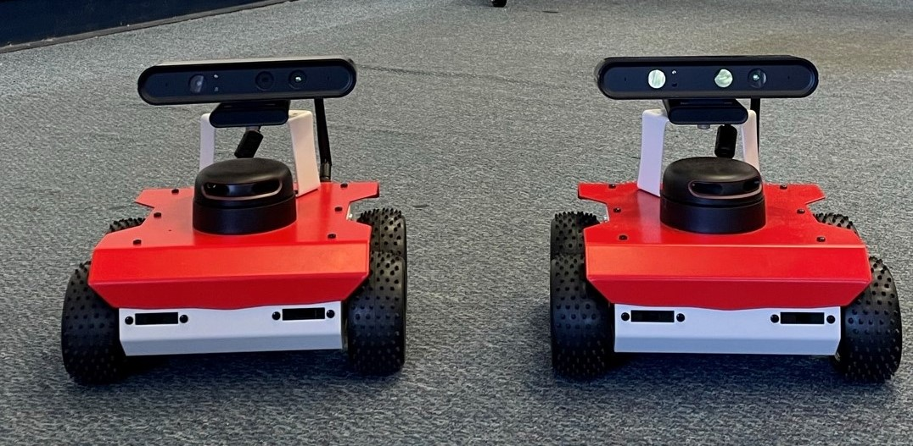
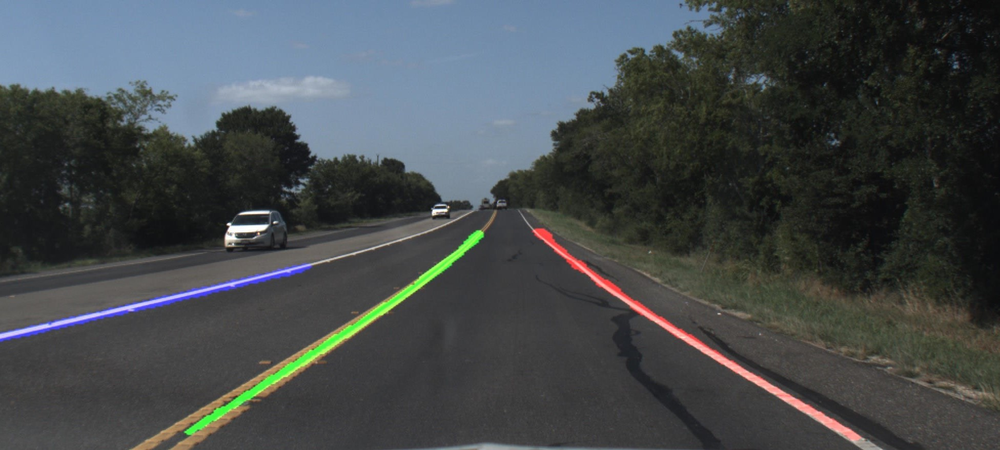
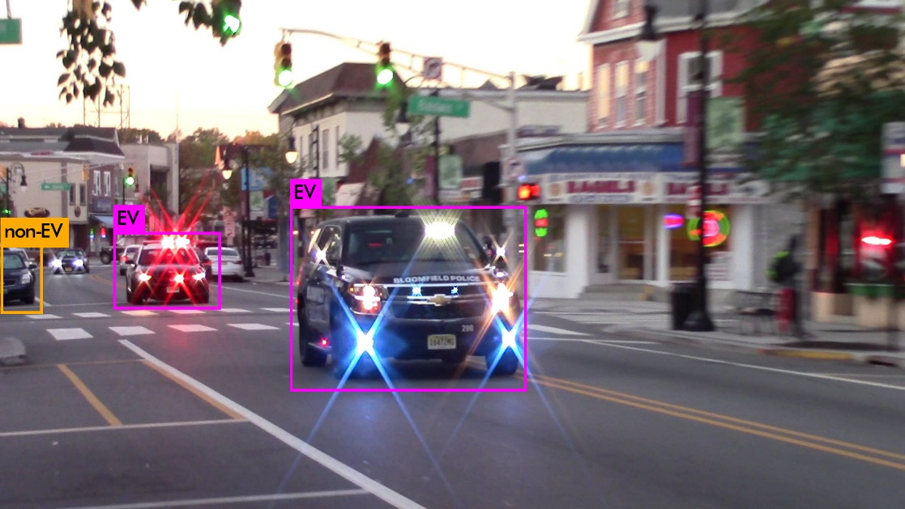
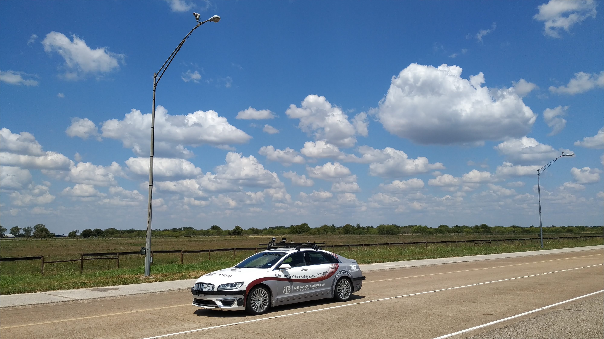
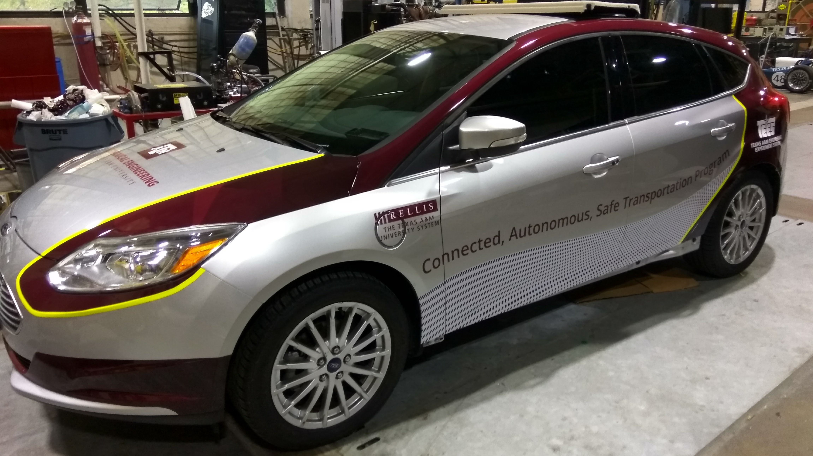

Projects
A list of my projects.
Multi-Agent SLAM and navigation using ROSBot
Navigation using a team of robots in an indoor environment with obtacles.

Reference Machine Vision for ADAS functions
A reference system for evaluating different lane markings, pavement materials, and perception algorithms used in ADAS

Response of Autonomous Vehicles to Emergency Response Vehicles (RAVEV)
Protocols for autonomous vehicles to safely respond to different classes of emergency vehicles using fused data from sound, vision, and other onboard sensors.

Infrasturcture Enabled Autonomy (IEA)
A distributed intelligence architecture for Connected Autonomous Vehicles (CAV) by offloading core computational functionalities to the infrastructure.

Low-cost drive-by-wire system for Ford Focus
A low-cost drive-by-wire system to control a Ford Focus vehicle via sensor emulation using Arduino Mega.
